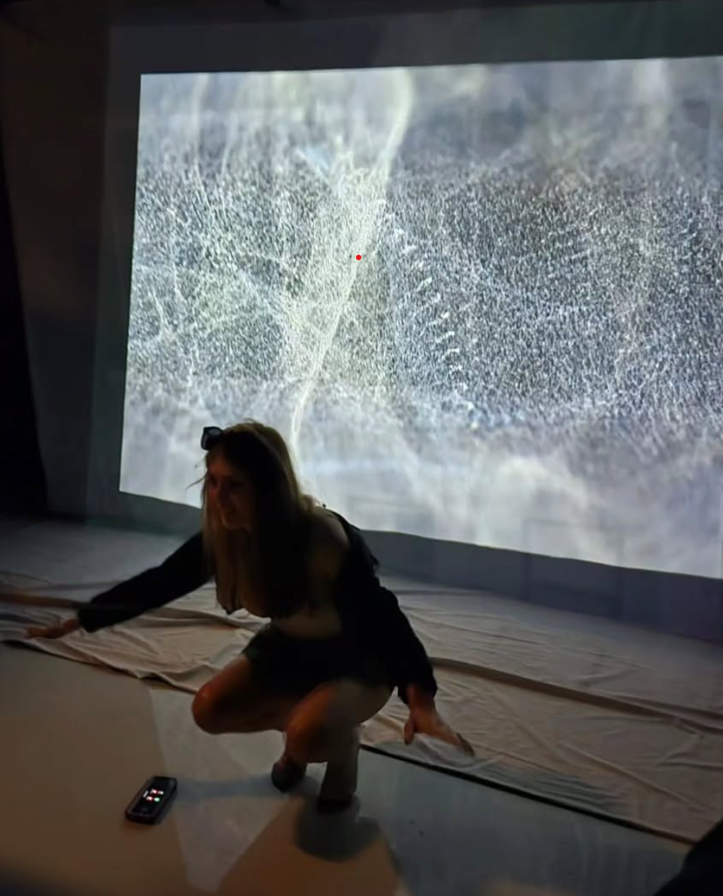

-
About
hi! its Oyku or Yuko, a NY-based Turkish designer, game programmer, and technical artist. I love tasting sound, eating cheetos and making games.
I’m currently pursuing my Master’s degree in Game Design at NYU.
With over 5 years of experience as a game programmer and designer, I specialize in Unity and am fluent in C#. My work spans interactive experiences and immersive visuals, using tools like Unity and TouchDesigner to bring stories to life.
Currently I am working on my thesis, which delves into the Turkish expat experience, exploring identity and change through a game that recreates the streets of Kadıköy. It reflects on lost friendships and the evolving sense of home, blending personal memories with cultural storytelling.
I’m dedicated to designing experiences that resonate deeply, connecting people through innovative and emotionally-driven narratives.
oykuyamak@gmail.com
- 